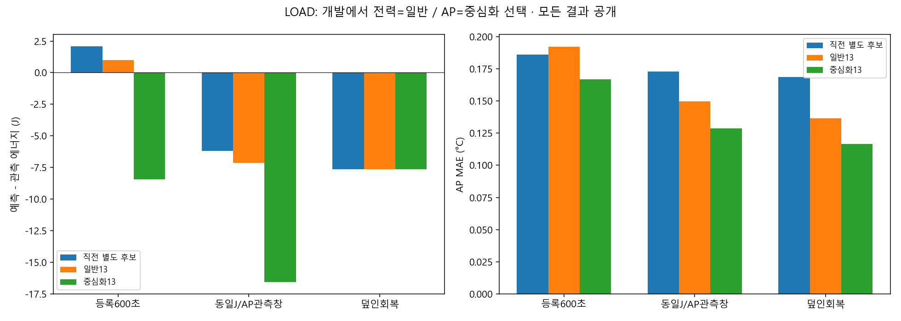
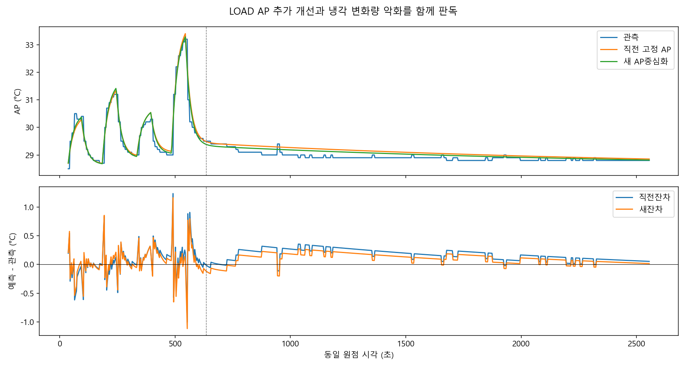
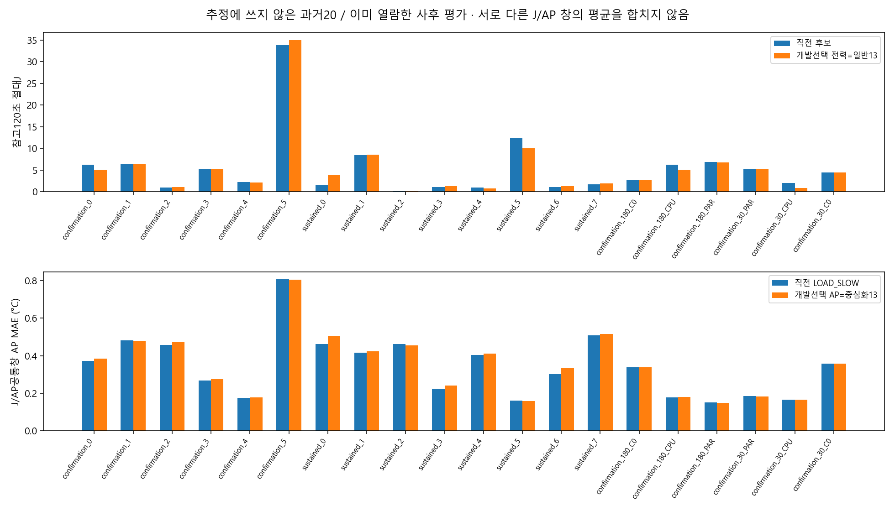
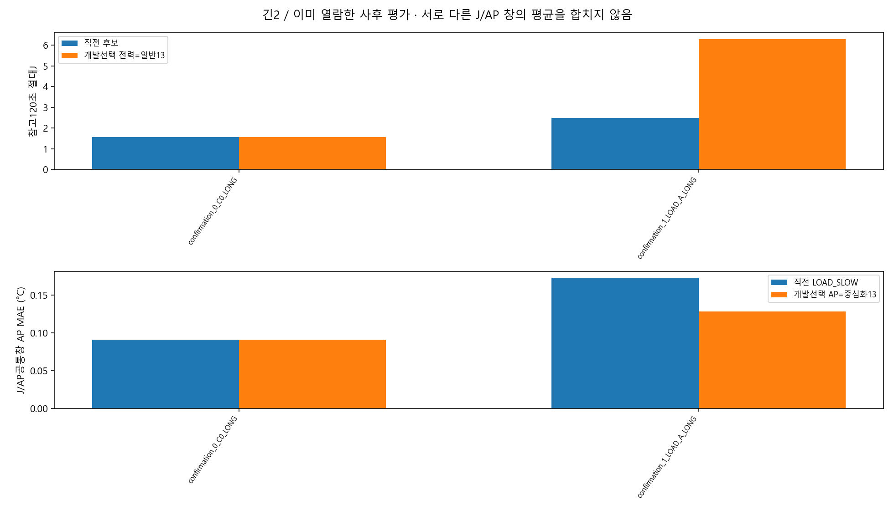

개발에서 전력=일반13/AP=중심화13을 선택한 뒤 평가22에서 바꾸지 않았습니다. 선택은 두 새 방법간 순위이며 직전모형 비악화gate가 아닙니다. 기존 zero-offset+고정 LOAD_SLOW 주진단 경로를 유지하고, 새모형은 명시적 전이 계산용 API로만 제공합니다.
| 동일 조건·분모 | 직전 → 새 동결선택 | 해석 |
|---|---|---|
| LOAD 등록600초 J차이 | +2.081 → +0.988J | 추가 개선 |
| 같은600초 AP MAE | 0.18615 → 0.16671°C | 새 AP계수로 추가 개선 |
| LOAD 긴 J/AP공통창 J차이 | −6.187 → −7.121J | 악화 |
| 같은 긴 창 AP MAE | 0.17296 → 0.12859°C | 개선, 냉각 변화량 오차는 악화 |
| 추정미사용20·참고120초 평균절대J | 5.4589 → 5.3847J | 11악화 |
| 같은20·J/AP공통창 AP 평균MAE | 0.34393 → 0.35078°C | 12악화 |
결과·수식·창·한계 · 토론·모든CSV·API 명령 · 동결선택표 · 미채택판정 · 검증·hash




에너지의 선택 방법은 중심화가 아니므로 에너지 변화를 중심화의 성과라고 부르지 않습니다. 무부하 C0·미래 배경변동·정책 차이부호2/4는 미해결입니다. 최종 시험값을 보고 재추정·시간상수탐색·창선택·자동버전선택을 하지 않았습니다. 기본/RL/strict·experiment_ready=false와 기존 자료를 보존했습니다.